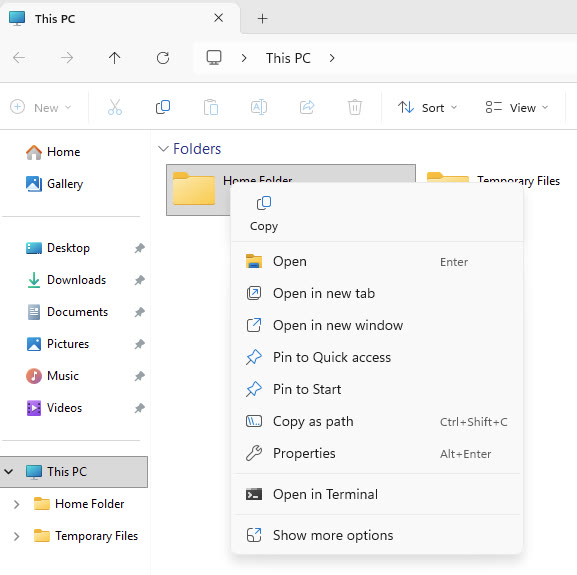
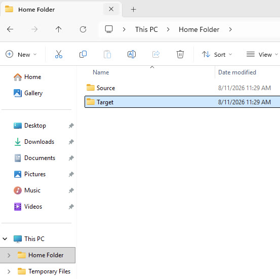
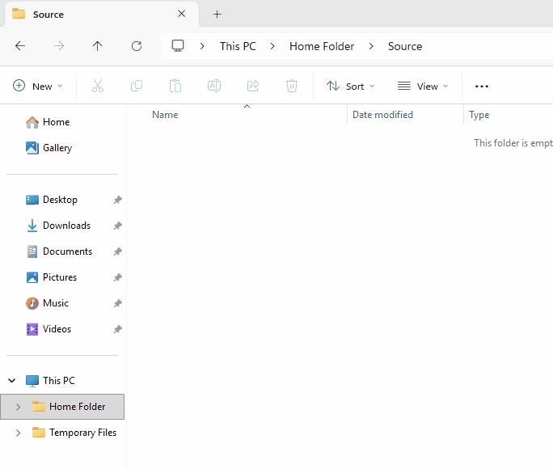

Phase 5 of 9
5
Create your test folders and files
The runtime needs somewhere on disk to watch for files. We'll create a simple Source/Target folder pair and a test file to move between them.
⏰ ~3 min1
Find your home folder path
Open Windows Explorer. On the left-hand side, you'll see a pinned Home Folder. Right-click on it and choose Copy as path.

2
Create a Source and Target subfolder
Inside the Home Folder, make a Source and a Target subfolder. You'll point flow endpoints at these in a few minutes.

3
Create a test file in the Source folder
Open Notepad, type a few characters, and save it as test_file.txt inside your Source folder. This is the file you'll transfer end to end later.
